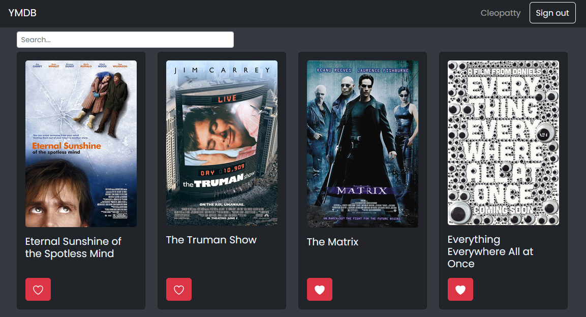

YMDB
Beginning
Overview: YMDB (Your Movie DataBase) is a web app to search movies, view their details, and save them for later. It's kind of like IMDB but, well, not quite so big.
Technical: It's a full-stack app - I built the backend and API using Node.js and Express, and created 2 separate frontends, one in React and one in Angular.
The goal: I built YMDB as part of a full-stack web development program. I wanted a full-stack project where I could create my own API, and I also wanted to try out multiple frontend frameworks to compare them.
Middle
Step 1: I created a MongoDB database hosted on AtlasDB.
Step 2: I created an API to the database using Node.js and Express. Use Mongoose for ...? Used Morgan for ...?
Step 3: I created a frontend using React. Used React Bootstrap for styling. Challenges: State management, especially for storing and updating a user's favorite movies between different views. I hasn't realised I was unneccessarily navigating between pages, which was clearing state each time. I used Redux Toolkit to gain visibility about this and solve the issue.
Step 4: I created a frontend using Angular. Used Angular Material UI for styling. Challenges: